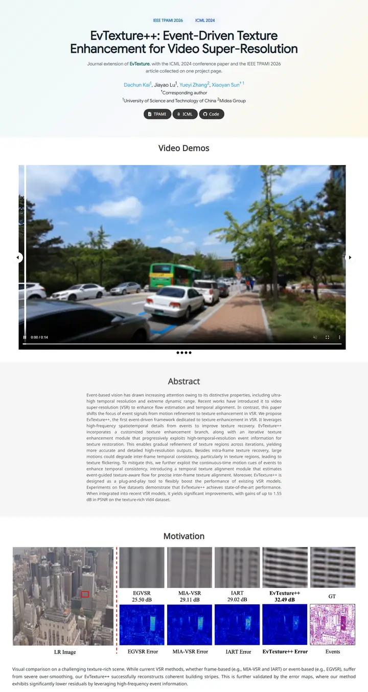

EvTexture++: Event-Driven Texture Enhancement for Video Super-Resolution
実験台に差す朝の光。ミントからクリームへのグラデーション、柔らかな青の会議名チップが二つ、映像が流れ出す前に並ぶチャコールのピル。

表示されたページと照合済みです。
選んだ理由
会議名チップを載せた柔らかなグラデーションのヒーローに、ダークなピル型ボタンの列が続きます。その後に全幅の動画カルーセルと色付きのアブストラクト帯、そしてキャプション付きで丁寧にレイアウトされたモチベーションの比較図が並びます。すっきりしていますが、アブストラクトの文字は小さめです。
以下の説明と DESIGN.md 本文は英語です。コーディングエージェントが同じ一つの版を読めるよう、翻訳していません。
概要
カラーパレット
タイポグラフィ
Google Sans
EvTexture++: Event-Driven Texture Enhancement for Video Super-Resoluti
Abstract · Method · Results · BibTeX — 0123456789
Noto Sans
EvTexture++: Event-Driven Texture Enhancement for Video Super-Resoluti
Abstract · Method · Results · BibTeX — 0123456789
余白と形
ページの構成要素
ガイドライン
似たスタイル

GAMEBoT: Transparent Assessment of LLM Reasoning in Games
整ったゲームアリーナのスコアボード。ネイビーのタイトルの上にマスコットの紋章、その下のひんやりした灰青のグラデーション帯にニュースカードと、すみれ色の見出しのスコア表。

InstructPart: Task-Oriented Part Segmentation with Instruction Reasoning
グレーと白の縞模様の実験ノート。タイトルは自らのキーワードをティールで示し、破線パネルのやかんが、一行も読まないうちにタスクを説明してくれる。

Symmetrical Visual Contrastive Optimization: Aligning Vision-Language Models with Minimal Contrastive Images
2色で組み立てた主張。シアンは一致する画像、オレンジは一致しない画像を意味し、その色のコードは本文のハイライトから、グレーと白が交互に続く帯の上のすべての図まで途切れずに続く。

Slamming: Training a Speech Language Model on One GPU in a Day
グラフひとつで語る主張。ティーザー動画があるはずの場所に注釈付きの大きなスケーリングプロットを置き、続いてグレーのアブストラクトと、GPU 予算のタグが付いたオーディオプレーヤーの静かなグリッド。

Peeking Ahead of the Field Study: Exploring VLM Personas as Support Tools for Embodied Studies in HCI
白い机にテープで開いて留めたフィールドノート。背の高い淡いグレーの見出し、空色で長く連なる名前、そしてサーモンから砂色へ移ろう3コマの絵コンテが研究を説明する。

Reflection Separation from a Single Image via Joint Latent Diffusion
ひと引きで拭い去れる、夜のガラス一枚。